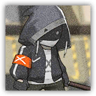
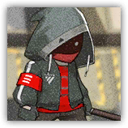

暴徒 Rioter
近战 物理；普通 任意
|
 |
来路不明的作战人员。来路不明的作战人员。常见的混迹于各种纷乱地区的人。用简单的面罩掩盖了自己的身份，使用随意制作的武器进行近身攻击。有时会携带土制燃烧瓶以投掷造成伤害。 |
暴徒丨Rioter
中型类人（任意种族），中立
| AC 11 | 先攻 +0（10） |
| HP 32（5d8+10） | |
| 速度 30 尺 | |
| 调整 | 豁免 | 调整 | 豁免 | 调整 | 豁免 | |||||||||
|---|---|---|---|---|---|---|---|---|---|---|---|---|---|---|
| 力量 | 15 | +2 | +2 | 敏捷 | 11 | +0 | +0 | 体质 | 14 | +2 | +4 | |||
| 智力 | 10 | +0 | +0 | 感知 | 10 | +0 | +0 | 魅力 | 11 | +0 | +0 |
| 技能 运动+4，威吓+2 |
| 装备 短棍，布甲 |
| 感官 被动察觉10 |
| 语言 任意一门语言（通常是通用语） |
| CR 1/2（XP 100；PB +2） |
特质 Traits
集群战术 Pack Tactics。若暴徒的攻击目标生物周围5尺范围内存在有至少一个未失能的盟友，则暴徒对该生物进行的攻击检定具有优势。
动作 Actions
短棍 Club。近战攻击检定：+4，触及5尺。命中：4（1d4+2）挥砍伤害。
燃烧瓶 Molotov cocktail（2次/短休）。远程攻击检定：+2，射程20/40。命中：5（2d4）燃烧伤害，并点燃目标。
暴乱分子 Rioter Leader
近战 物理；普通 暴徒
|
 |
来路不明的作战人员。比一般暴徒更具威胁。常见的混迹于各种纷乱地区的人。用简单的面罩掩盖了自己的身份，使用随意制作的武器进行近身攻击。这种简陋的武器，在更多的场合中代表着暴乱。有时会携带土制燃烧瓶以投掷造成伤害。 |
暴乱分子丨Rioter Leader
中型类人（任意种族），中立
| AC 12 | 先攻 +1（11） |
| HP 45（7d8+14） | |
| 速度 30 尺 | |
| 调整 | 豁免 | 调整 | 豁免 | 调整 | 豁免 | |||||||||
|---|---|---|---|---|---|---|---|---|---|---|---|---|---|---|
| 力量 | 16 | +3 | +3 | 敏捷 | 12 | +1 | +1 | 体质 | 14 | +2 | +4 | |||
| 智力 | 11 | +0 | +0 | 感知 | 12 | +1 | +1 | 魅力 | 12 | +1 | +1 |
| 技能 运动+5，察觉+3，威吓+3 |
| 装备 短棍，布甲 |
| 感官 黑暗视觉60尺，被动察觉13 |
| 语言 通用语，以及一门其他语言 |
| CR 1（450 XP；PB +2） |
特质 Traits
集群战术 Pack Tactics。若暴乱分子的攻击目标生物周围5尺范围内存在有至少一个未失能的盟友，则暴乱分子对该生物进行的攻击检定具有优势。
动作 Actions
多重攻击 Multiattack。暴乱分子发动两次攻击。
短棍 Club。近战攻击检定：+5，触及5尺。命中：5（1d4+3）挥砍伤害。
燃烧瓶 Molotov cocktail（2/短休）。远程攻击检定：+2，射程20/40。命中：5（2d4）燃烧伤害，并点燃目标。